🎯 Pourquoi ce chapitre ?
D'après le programme officiel tunisien (Thème 3, Objectif 3 — p.19), ce chapitre vise à :
📚 Préacquis
- Ch.1 — La cellule eucaryote possède un noyau contenant la chromatine (ADN). Le centriole intervient dans la division cellulaire.
- Ch.2 — Les caractères héréditaires sont transmis des parents aux descendants via l'ADN.
- Les vrais jumeaux sont identiques car issus d'une même cellule-œuf qui s'est divisée.
- La colchicine bloque la mitose en métaphase → permet l'observation des chromosomes.
❓ 2 Questions directrices
- Comment les divisions cellulaires assurent-elles la reproduction conforme ?
- Quelle est la forme et le nombre des chromosomes dans une espèce ?
🧠 Comprendre avant de mémoriser
La mitose est le mécanisme qui permet à une cellule de se diviser en deux cellules filles rigoureusement identiques. Imagine une photocopieuse qui duplique un livre page par page, puis sépare les deux exemplaires. La mitose, c'est exactement cela : d'abord, la cellule duplique son ADN (chaque chromosome devient double), puis elle répartit équitablement les chromosomes entre les deux cellules filles. Résultat : chaque cellule fille hérite du même nombre de chromosomes que la cellule mère. Ce mécanisme est à la base de la croissance, du renouvellement cellulaire et de la reproduction asexuée (bouturage, clonage).
Clique sur chaque notion · Pièges CAPES et connexions révélés
🔬 Les 4 phases de la mitose
La mitose est un phénomène continu qui dure 1 à 3 heures. On la découpe artificiellement en 4 phases pour faciliter son étude. Le critère principal pour distinguer les phases est la position des chromosomes dans la cellule.
| Phase | Durée | Événements clés | État des chromosomes |
|---|---|---|---|
| Prophase | 15–60 min | Condensation chromatine · Disparition enveloppe nucléaire · Formation fuseau | 2 chromatides reliées par centromère |
| Métaphase | Quelques min | Chromosomes alignés à l'équateur = plaque équatoriale | Condensation maximale · 2 chromatides |
| Anaphase | 2–3 min | Séparation des chromatides · Migration vers les pôles | 1 chromatide par chromosome |
| Télophase | 30–60 min | Décondensation · Reformation enveloppe nucléaire · Division cytoplasme | Retour à l'état de chromatine |
Métaphase = Milieu (chromosomes au milieu)
Anaphase = Aller vers les pôles (chromatides migrent)
Télophase = Terminer (tout se reforme)
→ PMAT : Pacha Mange À Table !
🧬 Le Caryotype — carte d'identité chromosomique
Le caryotype est comme la carte d'identité génétique d'une espèce. Il représente l'ensemble des chromosomes d'une cellule, classés par taille et par position du centromère. Chaque espèce a un caryotype caractéristique. L'Homme a 46 chromosomes (2n = 46), le Renard 38, la Drosophile 8.
| Type de chromosomes | Définition | Exemple humain |
|---|---|---|
| Autosomes | Paires identiques chez les deux sexes | 22 paires (paires 1 à 22) |
| Gonosomes (chromosomes sexuels) | Paire différente selon le sexe | XX (femme) ou XY (homme) |
Formule chromosomique : Homme = 2n = 46 (44 autosomes + XY) · Femme = 2n = 46 (44 autosomes + XX)
🔄 Le Cycle Chromosomique
Les chromosomes ne sont pas toujours visibles. Pendant l'interphase (période entre deux mitoses), ils sont décondensés sous forme de chromatine (filaments fins et emmêlés). Ce n'est que pendant la mitose qu'ils se condensent en bâtonnets visibles. Au cours de l'interphase (phase S), l'ADN se réplique : chaque chromosome passe de 1 à 2 chromatides. C'est cette duplication qui assure que chaque cellule fille recevra une copie complète de l'information génétique.
⚠️ 3 Pièges classiques CAPES
En anaphase : les chromatides se séparent → 4n chromosomes à 1 chromatide (2n qui migrent vers chaque pôle).
En télophase : 2n chromosomes à 1 chromatide dans chaque cellule fille.
Le nombre de chromosomes double temporairement pendant l'anaphase !
Cellule végétale : pas de centriole · division par construction d'une nouvelle paroi à l'équateur.
Les phases (PMAT) sont IDENTIQUES, seul le mécanisme de division du cytoplasme diffère.
🔗 Connexions avec le manuel
Le centriole (Ch.1) forme le fuseau de division. La membrane nucléaire se désagrège puis se reforme autour de chaque lot de chromosomes.
Le caryotype (nombre et forme des chromosomes) est un caractère SPÉCIFIQUE de l'espèce. L'Homme a 46 chromosomes, le Renard 38.
La duplication de l'ADN en interphase (phase S) est le mécanisme moléculaire de la reproduction conforme. La réplication semi-conservative expliquée en Ch.4.
La colchicine (alcaloïde extrait du colchique) bloque la mitose en métaphase. Utilisée pour réaliser les caryotypes.
💭 Questions de réflexion
Anaphase : les chromatides se séparent → 92 chromosomes à 1 chromatide (46 migrent vers chaque pôle). Chaque future cellule fille héritera de 46 chromosomes. Le nombre de chromosomes est donc temporairement doublé pendant l'anaphase (4n = 92).
Qu'est-ce que la reproduction conforme ?
La reproduction conforme est le processus par lequel un organisme produit des descendants génétiquement identiques à lui-même, sans intervention de gamètes. Contrairement à la reproduction sexuée (qui mélange le matériel génétique de deux parents), la reproduction conforme transmet l'information génétique à l'identique. C'est le mécanisme du bouturage, du marcottage, du clonage et de la mitose.
Exemples de reproduction conforme
| Type | Exemple | Résultat |
|---|---|---|
| Multiplication végétative | Bouturage, marcottage, greffage | Plants identiques au pied-mère |
| Culture in vitro | Microbouturage pomme de terre | Milliers de plants identiques |
| Clonage naturel | Vrais jumeaux humains | Deux individus génétiquement identiques |
| Culture bactérienne | Souches S et R de pneumocoques | Colonies identiques à la bactérie initiale |
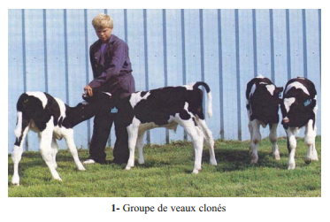
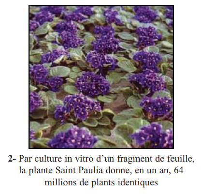
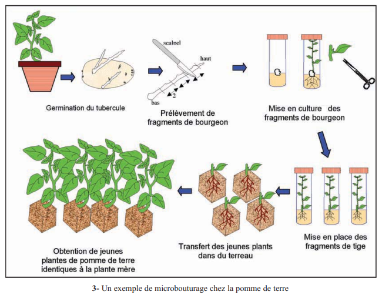
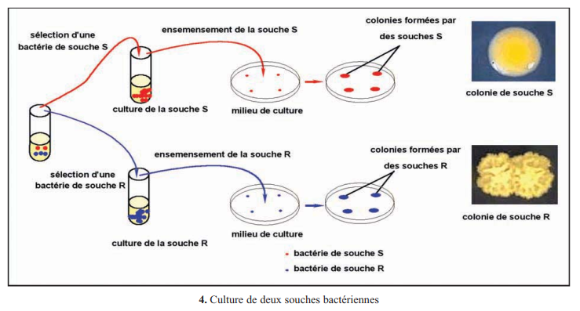
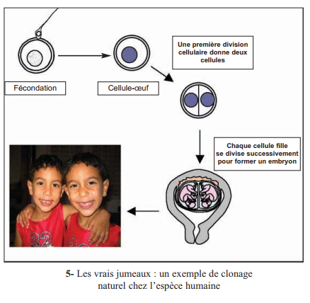
📌 Retenons — Reproduction conforme
1. La reproduction conforme produit des descendants .
2. Les vrais jumeaux sont un exemple de .
Observer des cellules en division
Pour observer la mitose, on utilise des méristèmes de racines (oignon, ail) — zones de croissance active où les cellules se divisent rapidement. On colore au carmin acétique (colorant spécifique des noyaux) qui permet de visualiser les chromosomes. La colchicine est une substance qui bloque la mitose en métaphase en empêchant la formation du fuseau, ce qui permet d'observer les chromosomes sous leur forme la plus condensée.
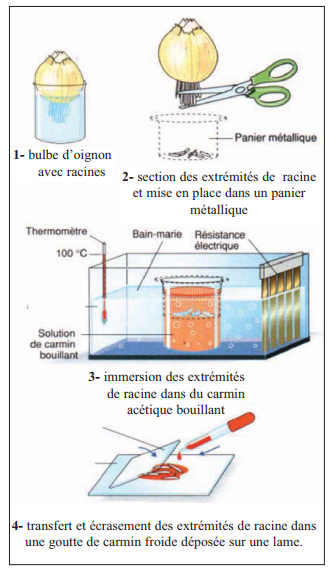
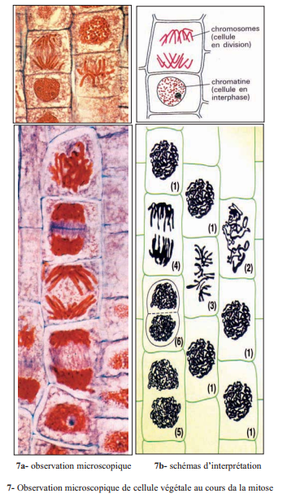
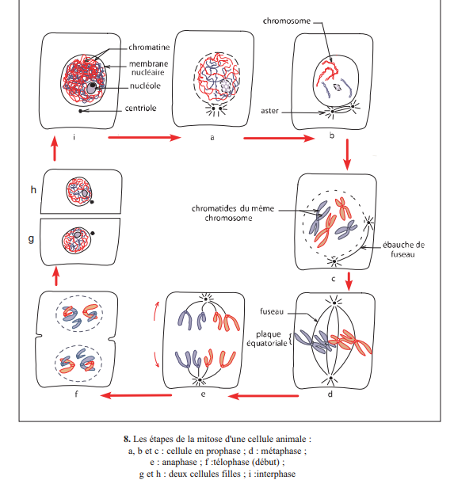
La mitose est un phénomène continu qu'on découpe artificiellement en 4 phases selon la position et l'aspect des chromosomes. Le critère de reconnaissance est simple : où sont les chromosomes et sous quelle forme ?
| Phase | Ce qu'on observe | État des chromosomes | Durée |
|---|---|---|---|
| Prophase | Chromosomes apparaissent · Enveloppe nucléaire disparaît · Fuseau se forme | 2 chromatides reliées par un centromère | 15–60 min |
| Métaphase | Chromosomes alignés au centre = plaque équatoriale | Condensation maximale · 2 chromatides | Quelques min |
| Anaphase | Les chromatides se séparent et migrent vers les pôles | 1 chromatide = 1 chromosome | 2–3 min |
| Télophase | Chromosomes se décondensent · Enveloppes nucléaires se reforment | Retour à la chromatine | 30–60 min |
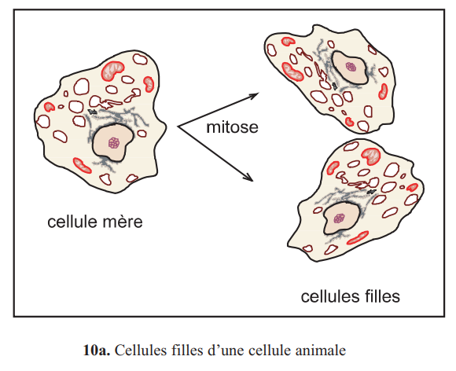
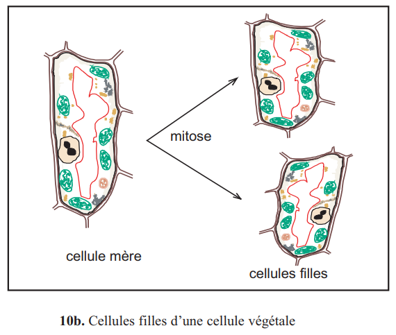
• Cellule animale : possède un centrosome (2 centrioles) qui se dédouble et migre aux pôles → forme l'aster. Division du cytoplasme par étranglement.
• Cellule végétale : PAS de centriole. Les fibres du fuseau se forment à partir du cytoplasme. Division par construction d'une nouvelle paroi à l'équateur.
• Les 4 phases (PMAT) sont identiques dans les deux types cellulaires.
1. En métaphase, les chromosomes sont .
2. La séparation des chromatides se produit en .
3. La cellule végétale se distingue par .
Le Caryotype — photographie des chromosomes
Un caryotype est une photographie des chromosomes d'une cellule, classés par taille décroissante et par position du centromère. Il est réalisé en bloquant la mitose en métaphase (colchicine), moment où les chromosomes sont les plus condensés donc les plus visibles. Le caryotype est caractéristique de chaque espèce : l'Homme a 46 chromosomes, le Renard 38, la Drosophile 8.
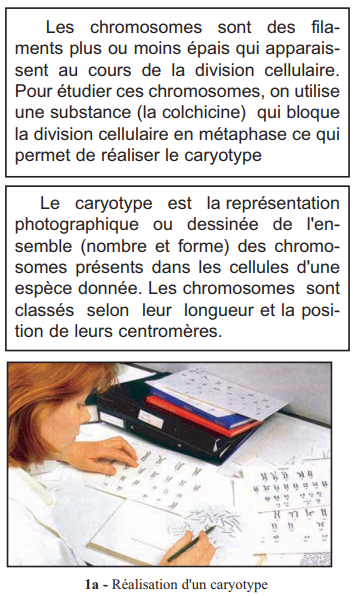
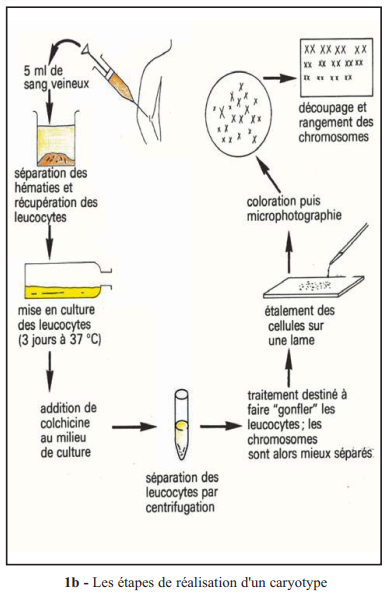
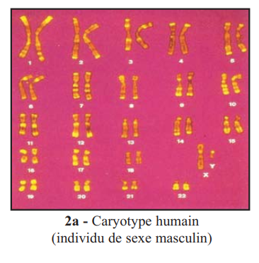
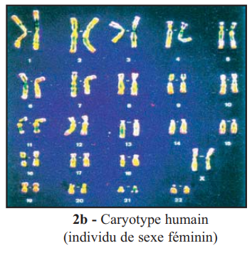
| Concept | Définition | Exemple humain |
|---|---|---|
| 2n | Nombre total de chromosomes dans une cellule diploïde | 2n = 46 |
| n | Nombre de paires de chromosomes (ou nombre dans les gamètes) | n = 23 |
| Autosomes | Chromosomes identiques chez les deux sexes | 22 paires (1 à 22) |
| Gonosomes | Chromosomes sexuels (déterminent le sexe) | XX (femme) ou XY (homme) |
| Chromosomes homologues | Paires de chromosomes semblables (taille, centromère) | 1 chromosome maternel + 1 paternel |
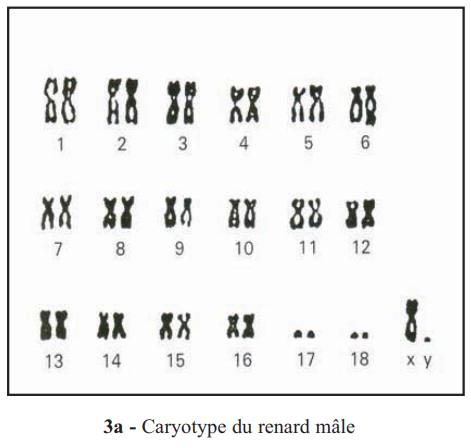
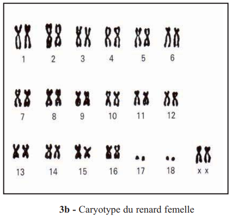
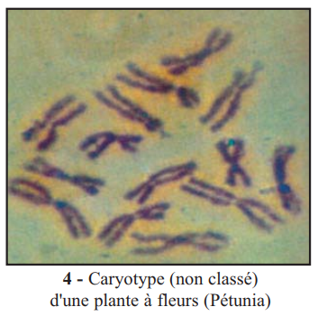
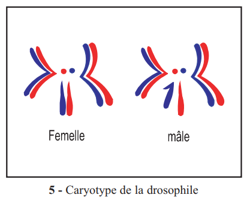
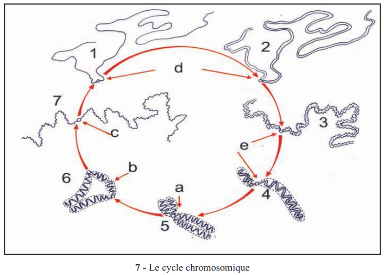
• Interphase (phase S) : l'ADN se réplique → chaque chromosome passe de 1 chromatide à 2 chromatides (duplication).
• Mitose (anaphase) : les 2 chromatides se séparent → chaque cellule fille reçoit 1 chromatide de chaque chromosome.
• Conséquence : chaque cellule fille hérite exactement du même patrimoine génétique (mêmes chromosomes, même nombre) que la cellule mère. C'est le fondement de la reproduction conforme.
1. 2n = 46 signifie que l'espèce humaine possède .
2. Une cellule humaine en métaphase contient .
3. Les chromosomes sexuels (gonosomes) sont .
1La mitose est un phénomène continu durant 1 à 3 heures. On distingue 4 phases : . Chaque cellule fille hérite .
2Le caryotype est l'ensemble des chromosomes classés par . Il est caractéristique de chaque espèce. L'Homme a .
3Le cycle chromosomique comprend deux événements fondamentaux : la et le .
📝 Exercices — Manuel p.210–214
📐 Ex.1 — Classer les phases de la mitose (exercice 1, p.212)
| Croquis | Phase de la mitose |
|---|---|
| Chromosomes condensés visibles, enveloppe nucléaire disparaît | |
| Chromosomes alignés à l'équateur (plaque équatoriale) | |
| Deux lots de chromosomes migrent vers les pôles opposés | |
| Deux noyaux se reforment, cytoplasme se divise | |
| Noyau visible, chromatine décondensée, pas de chromosomes visibles |
🧬 Ex.2 — Nombre de chromosomes au cours de la mitose (exercice 4, p.227)
| Phase | Nombre de chromosomes | Nombre de chromatides par chromosome | Quantité d'ADN |
|---|---|---|---|
| G1 (interphase) | |||
| G2 (après phase S) | |||
| Métaphase | |||
| Anaphase | |||
| Télophase (1 cellule fille) |
🔢 Ex.3 — Ordonner les phases de la mitose
Remettre les phases dans l'ordre chronologique correct :
Un exercice par objectif pédagogique.
La reproduction conforme produit . Exemple : .
Ordre correct : .
2n = . L'Homme a 2n = .
Les autosomes sont . Les gonosomes sont .
La duplication de l'ADN a lieu en . La séparation des chromatides a lieu en .
La cellule animale possède un . La cellule végétale .
🃏 Flashcards
✏️ QCM — Format CAPES (1 à 3 bonnes réponses)
Questions du manuel (p.210-211) et complémentaires